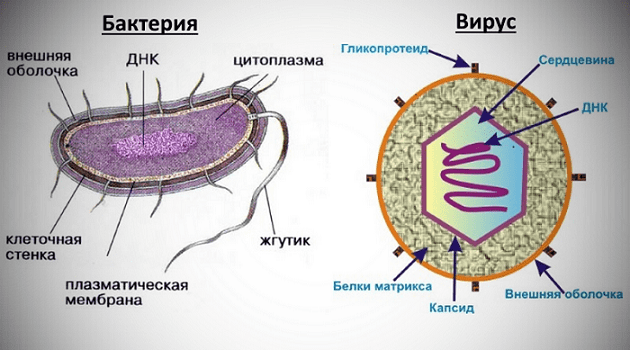
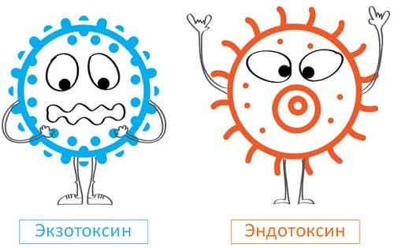

Бактерии существенно отличаются от вирусов. Во-первых, они значительно крупнее, во-вторых, представляют собой вполне законченный живой организм, который может сам себя обеспечивать и сам себя воспроизводить при наличии соответствующих условий окружающей среды (обнаружение еды, присутствие или отсутствие кислорода, подходящая температура). Попадая в организм человека, некоторые бактерии находят вышеупомянутые условия вполне пригодными для размножения и питания – вот так и возникает определенная болезнь.
До ХХ века борьба врачей с бактериальными инфекциями ничем не отличалась от борьбы с инфекциями вирусными – все усилия сводились к тому, чтобы помочь организму выстоять и справиться с болезнью самому. К счастью, возможности современной медицины заметно увеличились. Произошло это благодаря созданию нескольких групп лекарственных препаратов, позволяющих убить микроб и не нанести при этом существенного вреда человеку. Про эти лекарства вы, конечно же, слышали – антибиотики (пенициллин, тетрациклин, гентамицин), сульфаниламиды (стрептоцид, этазол, бисептол) и кое-что еще.
По прочтении этих строк у читателей может возникнуть весьма ложное представление в отношении того, что бактериальные инфекции лечить значительно легче, в сравнении с инфекциями вирусными. Это, к сожалению, не так. Не так, во-первых, потому, что бактерии демонстрируют чудеса приспособляемости, и по мере того как ученые придумывают все новые и новые антибиотики, появляются все новые и новые мутации всем известных бактерий, на которых эти антибиотики не действуют (или действуют недолго, или действует не так сильно, как хотелось бы). Во-вторых, одни и те же бактериальные болезни – допустим, воспаление легких или менингит – могут быть вызваны сотнями самых разнообразных микробов, и врачу иногда бывает очень трудно ответить на вопрос: «кто виноват?» и, соответственно, правильно наказать виновного, назначив нужный антибиотик.

Мир бактерий удивительно разнообразен, как разнообразно и велико количество вызываемых ими болезней. Бактерии отличаются друг от друга размерами, особенностями строения, размножения и питания, весьма различны условия, при которых они могут нормально существовать. Одни бактерии имеют круглую форму – их называют кокками (стафилококк, пневмококк, стрептококк, менингококк, гонококк), другие – удлиненную, их называют палочками (дизентерийная палочка, коклюшная, кишечная). Бактерии часто имеют не ровную поверхность, а всякие там выросты, жгутики, реснички.
В отличие от вирусов, бактериям не присуща строгая избирательность в поражении определенных органов человеческого организма. Но свои «предпочтения» есть у каждого микроба. Так, дизентерийная палочка находит оптимальные для себя условия в определенном отделе толстого кишечника, возбудитель коклюша – в клетках эпителия дыхательных путей, менингококк (возбудитель менингита) – в оболочках головного мозга. В то же время стафилококк не отличается особой разборчивостью и может вызвать воспалительный процесс где угодно – и на коже, и в костях, и в легких, и в кишечнике и т. д.
Теперь самое, пожалуй, главное.
Бактерия, какой бы противной и страшной она ни казалась, как правило, не приносит человеческому организму особого вреда.
Но, будучи полноценными живыми существами, бактерии образуют продукты своей жизнедеятельности, которые, в свою очередь, не что иное, как самые настоящие яды. Называются эти ядовитые вещества токсинами. Каждой бактерии присущи свои токсины, и именно токсинами, точнее их специфическим воздействием на организм человека, определяются симптомы конкретной болезни.
И количество токсинов, и опасность каждого отдельно взятого токсина у каждой бактерии свои, индивидуальные. И на токсины, и на саму бактериальную клетку организм реагирует примерно так, как на вирусы. Т. е. и токсин сам по себе, и оболочка бактерии, и ее выросты (реснички, жгутики) – это конкретные антигены, против которых вырабатываются соответствующие антитела, устраняющие вредное воздействие на человеческий организм. А сами бактерии еще и перевариваются особыми клетками-пожирателями – фагоцитами.
В подавляющем большинстве случаев токсины образуются во время гибели бактерии – т. е. находятся они в самой бактериальной клетке и выделяются при ее разрушении. Бактерии в организме человека постоянно разрушаются – во-первых, они и сами по себе живут недолго, во-вторых, на то и иммунитет, чтоб с бактериями бороться, и в-третьих, бактерии разрушаются во время лечения, все теми же антибиотиками, например.
Токсины, которые образуются при гибели бактерий, называются эндотоксинами («эндо-» – значит внутри).
Существует очень небольшое число бактерий, жизнедеятельность которых сопровождается постоянным выделением токсинов – т. е. бактерии способны выделять токсин, но не погибать при этом!
Такие токсины, образующиеся в процессе жизнедеятельности бактерий, называются экзотоксинами («экзо-» – извне, снаружи).
Экзотоксины – самые (!) опасные яды из всех обнаруженных или придуманных к настоящему времени.
Болезни, возбудители которых вырабатывают экзотоксин, называются экзотоксическими. Какие это болезни? Дифтерия, столбняк, ботулизм, газовая гангрена, сибирская язва – все эти названия вы слышали неоднократно, т. е. они (болезни), хоть и экзотоксические, но, к сожалению, не экзотические (вот такой каламбур).

При некоторых инфекциях бактерии способны вырабатывать одновременно и экзо-, и эндотоксины. Тут свои сложности в лечении. Примеры таких болезней – коклюш, холера, некоторые варианты дизентерии.
Опасность экзотоксических инфекций состоит в том, что антибиотики помочь не могут – за то время, что пройдет, пока их назначат (сначала ведь необходимо диагноз поставить), да пока они убьют микроб, может быть уже поздно. Антибиотики свое дело сделали, бактерий нет, но токсины остались. Они-то организм и погубят, если вовремя не ввести лекарство, нейтрализующее токсины (антитоксическую сыворотку).
Именно потому, что при лечении экзотоксических инфекций на антибиотики надежд мало, а с сывороткой не всегда можно успеть, главное – профилактика!
Она не для всех инфекций разработана, но ее (профилактики) принципы вполне понятны: если существует токсин, то необходимо, чтобы в организме человека постоянно (!) циркулировал антитоксин, т. е. противоядие. Именно поэтому детям делают прививки (прежде всего против дифтерии и столбняка) – вводят очень сильно ослабленные токсины,а в результате организм ребенка формирует вполне приличный иммунитет, поскольку вырабатывается антитоксин.
Е.О.Комаровский. "Здоровье ребенка"